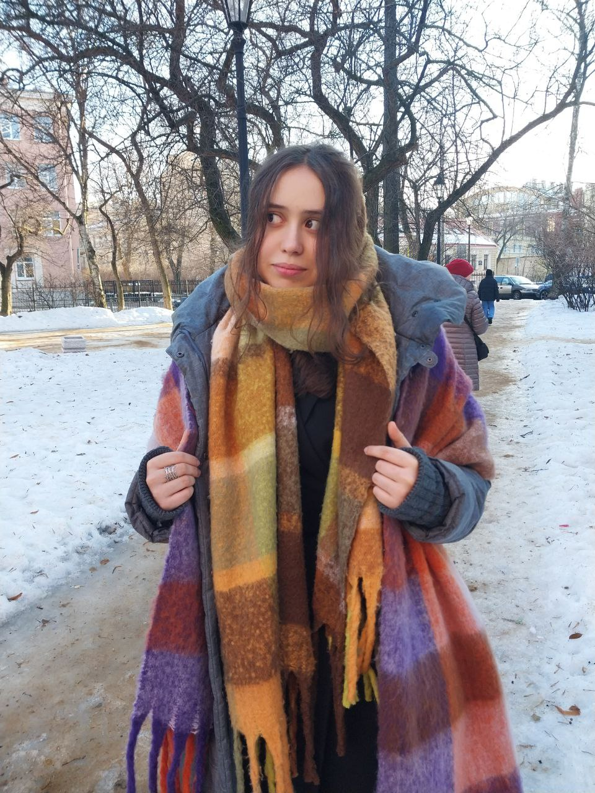

Место учебы
Фундаментальная и компьютерная лингвистика, НИУ ВШЭ, Москва
... а также вы меня могли запомнить как...
— skarii
— девочка с фиолетовыми наушниками
— «привет, а какое у тебя отчество?»
— «я, кстати, родилась в день чая»
— ой! Софа!
— моё жестовое имя на НИСе по РЖЯ на ФиКЛе - Петербург!
— «нетривиально» как слово, которое я употребляю во всех контекстах при любом удобном и неудобном случае
Фундаментальная и компьютерная лингвистика, НИУ ВШЭ, Москва
Санкт-Петербург
Санкт-Петербургская классическая гимназия №610
.. а еще мне не стыдно сказать...
... что я кое-что понимаю в...
[я обожаю слово "фанфакт" и называю им любые рандомные факты, которые нахожу интересными]
— я до последнего не знала, поступлю ли я в итоге на ФиКЛ, поэтому даже успела написать заявление на отчисление с питерского филфака вышки
— мой любимый кофейный напиток — это бамбл. бамбл — это кофе с (чаще всего) апельсиновым соком и (опционально) карамельным сиропом. в первый раз мне дико не понравилось, но кот тоже боялся пылесоса, а потом втянулся. такая дыра для бюджета...
— обожаю любые шутки, построенные на каламбурах. игра слов это так здорово! главное, не играть в ящик, а остальное придёт. я, кстати, играю на фортепиано и гитаре!
— три (!) года занималась графическим дизайном в издательском деле, поэтому как хобби рисую разные афишки для мероприятий и обложки для книжек (и получаю собственный экземпляр раньше всех!)
— чувствую себя экстравертом в обществе интровертов и наоборот. вот скажите, вы меня как воспринимаете? все тесты 55/45 и наоборот в зависимости от настроения и периода в жизни, вот никто не может мне ответить...
— люблю статистику, таблички, рандомные этимологии, истграмм древнегреческого, но не люблю геометрию. а матан мне даже нравился...
— я в каком-то смысле полна противоположностей. например, я очень люблю сидеть где-то дома и болтать или что-то смотреть и готовить (и даже неплохо!). а еще я обожаю гулять и готова проходить десятки тысяч шагов. если вы мне как-нибудь предложите сходить на БГ (кликабельно, посмотрите! это квесты по городу! постоянно где-то появляются!), то я не откажусь
— меня сложно впихнуть в одну страницу, особенно стараясь не писать полотна текста, но абсолютно точно можно поймать где угодно, потому что я с удовольствием расспрашиваюсь обо всем. а чтобы вам было проще и вы за что-то зацепились — мой любимый предмет в школе был древнегреческий, я раньше любила участвовать в дебатах и играть в театре, моё любимое время года — ранняя осень, а еще в этом октябре я впервые в жизни побываю на настоящем концерте!
— с самого начала знала, что буду учиться на ФиКЛе. и пусть вас не смущает первый пункт!
.. а еще когда-то у меня были...
... и хотя эта страничка ФИОЛЕТОВАЯ, мой любимый цвет - это...
...ОРАНЖЕВО-ГОРЧИЧНАЯ ОХРА!..
... как этот шарфик (я тут в 9 классе!)... а рядышком — в 11 классе! это тоже красиво!
... но ощущение, что я вообще не меняюсь внешне. что мне 14-15, что мне 18...

[ах, как я люблю шарфы!]